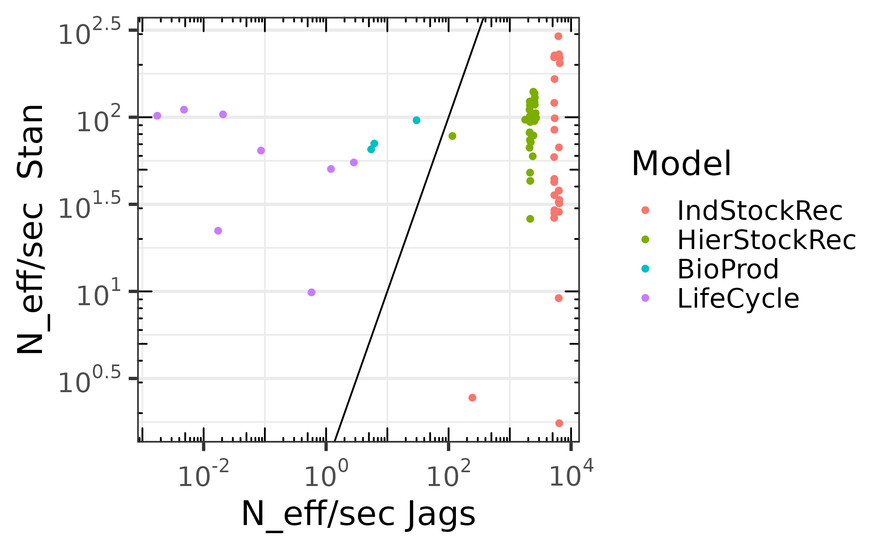
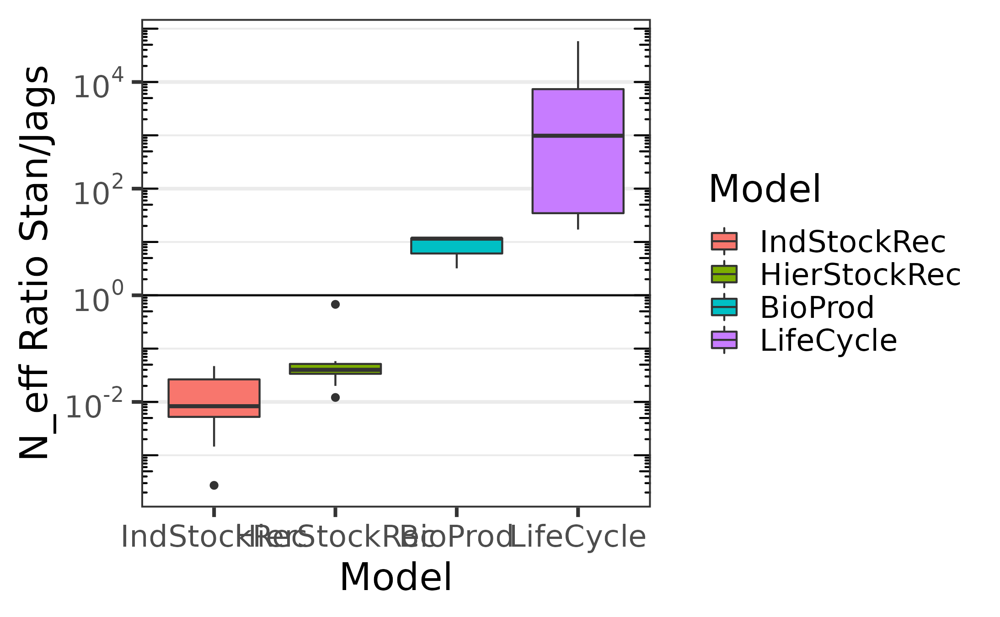
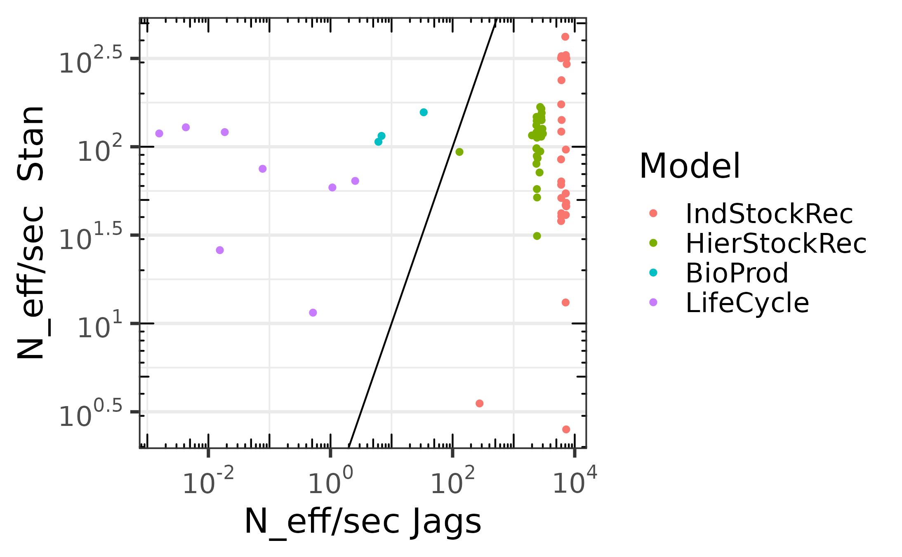
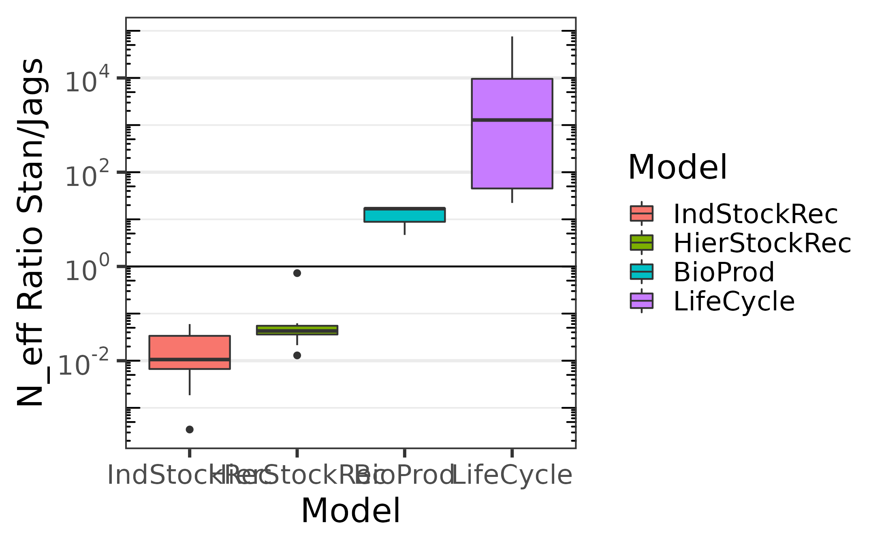

Stan and Jags performance comparaison for Hierarchical Bayesian Modeling for Ecological Data
stan-jags-performance-comparaison-for-hbmforecology.Rmd
library(hbm4ecology)
#> Please visit the site https://Chabert-Liddell.github.io/hbm4ecology/articles/
#> for R case study.
library(rstan)
#> Loading required package: StanHeaders
#> Loading required package: ggplot2
#> rstan (Version 2.21.5, GitRev: 2e1f913d3ca3)
#> For execution on a local, multicore CPU with excess RAM we recommend calling
#> options(mc.cores = parallel::detectCores()).
#> To avoid recompilation of unchanged Stan programs, we recommend calling
#> rstan_options(auto_write = TRUE)
library(tidyverse)
#> ── Attaching packages ─────────────────────────────────────── tidyverse 1.3.1 ──
#> ✔ tibble 3.1.7 ✔ dplyr 1.0.9
#> ✔ tidyr 1.2.0 ✔ stringr 1.4.0
#> ✔ readr 2.1.2 ✔ forcats 0.5.1
#> ✔ purrr 0.3.4
#> ── Conflicts ────────────────────────────────────────── tidyverse_conflicts() ──
#> ✖ tidyr::extract() masks rstan::extract()
#> ✖ dplyr::filter() masks stats::filter()
#> ✖ dplyr::lag() masks stats::lag()
library(GGally)
#> Registered S3 method overwritten by 'GGally':
#> method from
#> +.gg ggplot2
library(posterior)
#> This is posterior version 1.2.1
#>
#> Attaching package: 'posterior'
#> The following objects are masked from 'package:rstan':
#>
#> ess_bulk, ess_tail
#> The following objects are masked from 'package:stats':
#>
#> mad, sd, var
library(bayesplot)
#> This is bayesplot version 1.9.0
#> - Online documentation and vignettes at mc-stan.org/bayesplot
#> - bayesplot theme set to bayesplot::theme_default()
#> * Does _not_ affect other ggplot2 plots
#> * See ?bayesplot_theme_set for details on theme setting
#>
#> Attaching package: 'bayesplot'
#> The following object is masked from 'package:posterior':
#>
#> rhat
library(shinystan)
#> Loading required package: shiny
#>
#> This is shinystan version 2.6.0
library(rjags)
#> Loading required package: coda
#>
#> Attaching package: 'coda'
#> The following object is masked from 'package:rstan':
#>
#> traceplot
#> Linked to JAGS 4.3.0
#> Loaded modules: basemod,bugsIn this article we are going to compare the performance of the
Hamiltonian Monte Carlo using rstan and the Monte Carlo
Markov Chain using rjags on the biomass production model,
stock-recruitment model with hiearchical modeling and with independent
site as well as the life cycle model. For the last model, we modify the
observed data in order to make a proper sampling of the population size
with stan.
Stock-Recruitment models
Comparaison of the effective sampling size per second
We sample from one chain, using no thinning with 10000 iterations for warm-up and 90000 iterations after warm-up. The following plots give the effective sample size per second for the iterations after warm-up.


Comparaison of the effective sampling size per second, including compilation times and warm up.
The following ones include the compilation time and warm-up. We
notice that for simple models jags outperform
stan greatly, but as the model complexity grows,
jags performance decays while the one of stan
remains stable.

